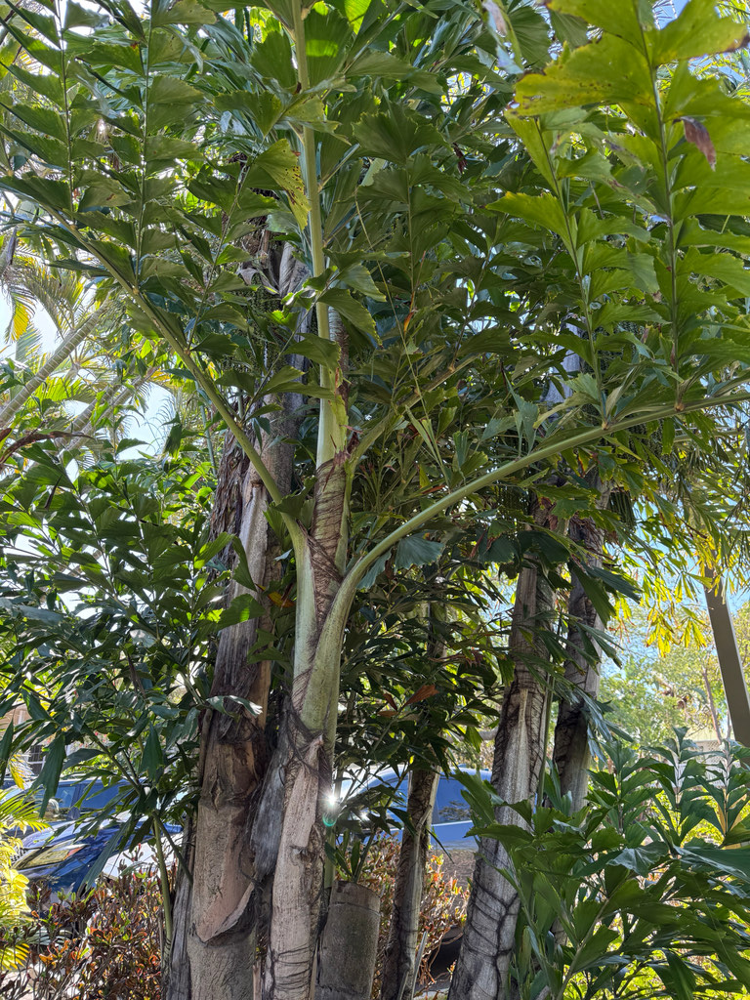

- The leaflets look like the ragged end of a torn piece of paper — or, if you squint, like the tail of a fish. No other palm has quite this leaf texture, which makes identification easy even from a distance.
- Produces fruit only once in its lifetime, then dies — it is monocarpic. A clustering species, so individual trunks die after fruiting while the clump continues via new stems from the base.
- The fruit and sap are toxic — the sap contains calcium oxalate crystals and other irritants. Handle with gloves when working around a fruiting plant.
- Fast-growing once established. The clustering habit makes it useful as a screening plant.
Non-native. Native to Myanmar (Burma), southwestern China, and Southeast Asia. Member of Arecaceae — the palm family. One of the largest palms in the genus Caryota.
- The Burmese Fishtail Palm is unmistakable up close: its leaflets are ragged-edged and triangular, like the torn corner of a sheet of paper or the tail of a fish, on leaves divided twice (bipinnate) - rare among palms. It grows in clustering clumps of slender gray trunks rather than a single stem.
- It has an unusual life cycle.
- Each trunk is monocarpic: it flowers only once, starting at the top and working downward over a couple of years, then dies - but the clump lives on through the younger suckers around it, so the plant as a whole persists. The fruit is reddish-black and, like the sap, full of needle-like calcium oxalate crystals (raphides) that burn and irritate skin, so it is handled with care.
- Native to Southeast Asia, it is a popular landscape and interior palm, but in South Florida it naturalizes into hammocks and disturbed woods, which is why it is watched and managed here.
The fruit, when produced before the trunk dies, is eaten by birds and wildlife. Otherwise limited direct wildlife value beyond structural habitat provided by the dense clumping habit.
Bipinnate — divided twice — with the secondary leaflets having an irregular, ragged, fish-tail shaped margin. This is the definitive ID feature. No other common Florida palm has this leaf texture.
Round, dark red to black at maturity, in large hanging clusters. Produced once before the individual trunk dies. Toxic — handle with gloves.
Ringed, upright, clustering — multiple trunks from the same base. Individual trunks die after flowering.
Multi-stemmed clustering palm, 20 to 40 feet tall per stem.
The fish-tail leaflet shape is unmistakable — ragged-edged, irregular, unlike the smooth or toothed margins of other palms. Bipinnate frond structure (divided twice) distinguishes the whole Caryota genus.
Do not eat the fruit of this palm. The fruit and sap contain calcium oxalate crystals that cause intense burning and irritation on contact with skin, mouth, and eyes. Wear gloves when handling it.
The fruit is toxic to dogs and cats as well, causing oral burning and irritation if eaten. Keep pets away from fallen fruit.


- © jsea (CC-BY-NC), via iNaturalist
- © Randall Carter (CC-BY-NC), via iNaturalist